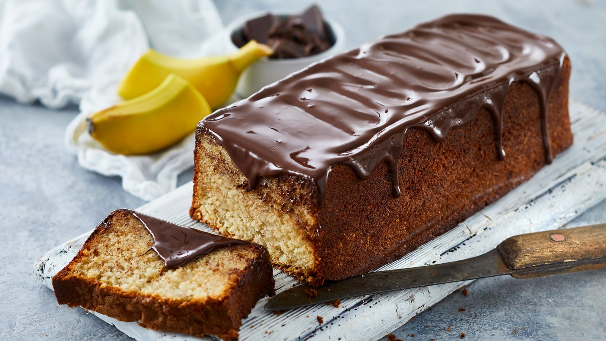

Mig og min Kageopskrift.
Den kage som har den mest hjerterørende, ekstraordinære smag for mig, er en banankage.
En helt normal banankage, som er fra en opskrift, Arla har lavet.
>
Ingredienser
- Æg
- Sukker
- Vaniljesukker
- Hvedemel
- Bagepulver
- Smør
- Bananer
- Chokolade
Fremgangsmåde
-
1. Pisk æg, sukker og vaniljesukker til en luftig æggesnaps.
2.Bland mel og bagepulver og vend det forsigtigt i dejen skiftevis med smørret. Vend de mosede bananer i.
3.Hæld dejen i en smurt franskbrødsform (ca. 1 liter) og bag kagen nederst i ovnen.
4.Vend banankagen ud på en bagerist og lad den køle af.
5.Overtræk med chokolade
6.Tag kagen ud af formen og placer den, med undersiden opad, på et fad.
7.Fordel den smeltede chokolade på kagen, pynt med evt. med valnødder og server.
8.Bagetid - Ca. 55 min. ved 175° - traditionel ovn. 😍
😀
Kilde til Kageopskrift
Profil